Ders 6
Önceki derste lineer sistemlerin hızlıca üzerinden geçtik; şimdi gayrı lineer sistemlere geri döneceğiz ve gayrı lineer sistemleri analiz ederken lineer kavramları 2 boyutta kullanmaya başlayacağız. İlk odaklanacağımız alan sabit noktalar.
$\dot{\underline{x}} = \underline{f}(\underline{x})$'in Sabit Noktaları
Önce teorik konulardan bahsedeyim, sonra birkaç örnek üzerinde teorinin nasıl işlediğini görebiliriz. Diyelim ki bir sabit nokta $(x^\ast,y^\ast)$ var, ve sistem
$$ \dot{x} = f(x,y) \qquad (1) $$
$$ \dot{y} = g(x,y) \qquad (2) $$
Hatırlarsak iki boyutta sabit nokta olması icin hem $\dot{x}=0$, hem de $\dot{y}=0$ olmalı, sistemin denge noktasını temsil eden eşitlik bu. Bizim bilmek istediğimiz bu sabit nokta hangi tür bir sabit nokta olduğu. Lineer sistemlerden bahsettiğimizde farklı türde sabit nokta görmüştük: düğümler, sarmallar, eğer noktaları, merkezler, vs. Gayrı lineer sistemleri incelerken bu kavramları kullanabilir miyiz?
Cevap çoğunlukla evet. Göreceğiz ki gayrı lineer sistemlerin sabit noktaları lineer sistemlerdekine oldukça benziyor - ki lineer sistemleri öğrenmemizin bir sebebi de buydu zaten. Muhakkak gayrı lineer durumda daha egzotik başka haller de mümkün, fakat bu egzotik durumlar çok nadir ortaya çıkıyorlar. Şimdilik o türden nadir durumları görmeyeceğiz.
Neyse, bir sabit noktayı sınıflamak için o noktada oluşan ufak sapmaları gözönüne alabiliriz,
$$ u(t) = x(t) - x^\ast \qquad (3) $$
$$ v(t) = y(t) - y^\ast \qquad (4) $$
Üstteki işlemlerle kordinat sistemimizin orijinini sabit noktaya doğru kaydırmış oluyoruz bir bakıma; ve o noktanın yakın çevresinde neler olduğunu anlamak istiyoruz. Şimdi $x,y$ hakkında bildiklerimizden hareketle $u,v$'nin diferansiyel denklemlerini türetelim. Mesela $\dot{u}$'yu hesaplayalım, $x^\ast$ sabit nokta olduğu için sabit değeri vardır, $u$'nun türevini alırken yokolur, geriye sadece $\dot{x}$ kalır, ve
$$ \dot{u} = \dot{x} = f(x,y) = f(x^\ast+u, y^\ast+v)$$
$x$'den $x^\ast+u$'e geçtik çünkü (3)'e göre bu böyle. Aynı durum (4) üzerinden $y$ için. Hala yaklaşıksallama yapmadık, yani Taylor açılımı ve yüksek dereceli terimleri atmak, vs. gibi işlemler, ufak bir sapmayı baz alarak buraya geldik, ve onun ardından daha önce tek boyutlu sistemlerde gördüğümüz lineerizasyon fikrini iki boyuta genelleyerek kullanmak istiyoruz.
Şimdi iki değişkenli bir fonksiyon için Taylor açılımınının nasıl yapılacağını hatırlamamız gereken o an geldi. $x^\ast,y^\ast$ etrafındaki açılım,
$$ \dot{u} = f(x^\ast,y^\ast) + u \frac{\partial f}{\partial x}\bigg|{x^\ast} + v \frac{\partial f}{\partial y}\bigg|{x^\ast} + ... $$
Noktalar yerinde yüksek dereceli terimler var, karesel, küpsel vs. gibi. Bu terimlerin önemsiz (çok küçük) olduğunu varsayıyoruz, çünkü $u,v$ zaten çok ufaktı, onların karesi, küpü daha da küçük olacaktır. $f(x^\ast,y^\ast)$ sıfır, çünkü sabit noktanın tanımı buydu; (1) ve (2)'nin sıfır olması. Geriye kalanlar,
$$ =u \frac{\partial f}{\partial x}\bigg|{x^\ast} + v \frac{\partial f}{\partial y}\bigg|{x^\ast} + .. $$
Kısmi türevler komplike fonksiyonlar gibi duruyorlar, ama unutmayalım, o fonksiyonların sabit noktalardaki değerlerini kullanıyoruz, yani kısmi türevlerin olduğu terimler de birer sayı. Bu arada kısmi türevler zamana bağlı değil, zamana bağlı olan sadece $u$ ve $v$.
Benzer şekilde,
$$ \dot{v} = u \frac{\partial g}{\partial x}\bigg|{x^\ast} + v \frac{\partial g}{\partial y}\bigg|{x^\ast} + ... $$
Notasyon biraz kalabalıklaştı, tüm bu işlemler toparlayıp bir matris çarpı vektör olarak yazsak daha iyi olur.
$$ \left[\begin{array}{r} \dot{u} \\ \dot{v} \end{array}\right] = \left[\begin{array}{rr} \frac{\partial f}{\partial x} & \frac{\partial f}{\partial y} \\ \frac{\partial g}{\partial x} & \frac{\partial g}{\partial y} \end{array}\right]_{x^\ast,y^\ast} \left[\begin{array}{r} u \\ v \end{array}\right] + ... $$
Tam vektörel, matris formunda,
$$ \dot{\underline{u}} = A \underline{u} + ...$$
Matris $A$ ileriki derslerde de cok önümüze çıkacak, ona Jacobian matris ismi veriliyor. Not: $\underline{u}$ içinde hem $\dot{u}$, hem de $\dot{v}$ var, $u$'lar biririne karışmasın.
Yüksek dereceli terimleri atarsak sabit nokta $\underline{x}^\ast$ etrafında bir lineerizasyon elde etmiş oluruz.
Tabii dikkatli olmak lazım, acaba bu lineerizasyon $\underline{x}^\ast$ etrafındaki niteliksel dinamiği iyi bir şekilde temsil edebiliyor mu? Niceliksel olarak bu temsilin tamamen aynı olmasını beklemiyoruz, çünkü yüksek dereceli terimleri attık. Bu dersteki amacımızın sistemin, onun faz portrestinin hakkında niteliksel bir fikir edinmek olduğunu söylemiştik, yani esas sorumuz yüksek dereceli terimleri atınca acaba niteliksel resimde değişim ortaya çıkar mı, mesela bir merkez sarmal, ya da bir eyer düğümü haline gelir mi?
Cevap, $x^\ast$ bir eğer, düğüm, ya da sarmal ise lineerizasyon ile niteliksel olarak doğru bir resim elde ediyoruz. Lineerizasyon bize bir sabit nokta eğer diyorsa, hakikaten o bir eğer. Sarmal var diyorsa sarmal var. İspatı tam matematiksel olarak görmek isteyenler teoriksel diferansiyel denklemlerin işlendiği bir kitaba, derse danışmalı. Fakat uç nokta durumlarda, eğer dejenere düğüm, yıldız, merkez, izole olmayan sabit nokta gibi bir durum var ise lineerizasyon analizde değişime yol açabiliyor.
Uç nokta durumlara niye uç nokta dedim? Resmi hatırlayalım,
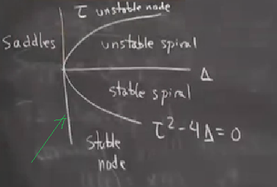
Üstteki tüm durumlar sağlam (robust) durumlar, grafikte koca koca alanları var. Gayrı lineer terimlerle onları belki biraz yerinden oynatabiliriz, ama bu fazla bir etki etmez. Uç nokta durumlar çoğunlukla iki büyük bölge arasında ortaya çıkarlar, mesela yeşil okun gösterdiği dikey eksenin tam üzerinde, hatırlarsak o çizgi izole olmayan sabit noktaların yaşadığı yerdi. Ya da eğri üzerinde, dejenere düğümler, yıldızlar oluyordu. Merkezler ise yatay eksen üzerinde yaşarlar. Tüm bu durumlar gayet ince, sonsuz küçük bir bölgeye aitler, bu yüzden gayrı lineer terimler onları etkileyebilirler. Bir örnek üzerinde görelim,
$$ \dot{x} = -y + ax(x^2 + y^2) $$
$$ \dot{y} = x + ay (x^2 + y^2) $$
Küpsel gayrı lineer terimler var görüldüğü gibi, karesel terimler de var. Orijinin bir sabit nokta olduğunu hemen görmek mümkün. Bu sistem için Jacobian hesaplanınca sabit nokta $(0,0)$ üzerinde,
$$ A = \left[\begin{array}{rrr} 0 & -1 \\ 1 & 0 \end{array}\right] $$
çıkıyor. Bu hesabı yapmanın iki yolu var, biri diğerine göre daha kafa yorucu. Mesela üst soldaki öğe niye sıfır?
$$ \frac{\partial \dot{x}}{\partial x} = 3ax^2 + ay^2 \bigg|_{(0,0)} = 3a(0)^2 + a(0)^2 = 0 $$
Diğer yol ile Jacobian'ı direk görmek için Jacobian'ın neyi temsil ettiğinin düşünürüz... Unutmayalım, Jacobian vektör alanının lineer bölümü, ve üstteki örnekte orijin etrafında lineerize ederken şu notasyonu kullanmıştık, $u = x - x^\ast$. Fakat eğer $x^\ast$ sıfır ise o zaman $u$ direk $x$'e eşittir, yani orijin etrafında lineerize ederken $u$ ile $x$ aynı şeydir. O zaman üstteki sistemde neler olduğunu hızlı bir şekilde görebilmek için $x$ yerine $u$, $y$ yerine $v$ geçiririz, ve ortaya çıkan $u,v$ bazlı küpsel terimleri gözönüne almayız, o zaman denklemde $\dot{u} = -v$ ve $\dot{v} = u$ kalır, geri kalanlar yok sayılabilir.
Neyse, hangi yöntemle olursa olsun Jacobian'ı elde ettik, şimdi onu sınıflayalım. İzi köşegendeki öğelerin toplamı, 0 + 0 sonuç 0, determinant ise köşegen öğelerinin çarpımından sağa yatık köşegen öğelerinin çarpımının çıkartılması,
$$ \tau = 0 $$
$$ \Delta = 0(0) - 1(-1) = 1 $$
Eğer grafiklersek, bu nokta,
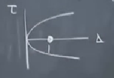
Yani (0,0) sabit noktası lineerizasyonumuza göre bir merkez. Tam terminolojiyi kullanırsak bu nokta bir "lineer merkez", yani lineerizasyon bu noktanın bir merkez oldugunu tahmin ediyor. Fakat bu tam doğru değil; en azından çok şanslı isek ve $a=0$ olsaydı bu doğru olurdu. Unutmayalım modelde bir parametre var, $a$. Lineerizasyona göre bu nokta tüm $a$ değerlerine göre bir merkez. Fakat bunun doğru olması mümkün değil. İşte lineerizasyonun doğru bir sonuç vermediği bir durumu şimdi görüyoruz. Modelde gerçekte neler oluyor?
Bu gayrı lineer sistemi analiz edelim o zaman. Fakat iki boyutta kullanılabilecek hiçbir teknik bilmiyoruz, şimdilik. Ama lise seviyesi matematikten bir numara belki bize yardım edebilir. $x^2 + y^2$ görür görmez hemen kutupsal kordinatları hatırlamaya başlıyoruz değil mi? Deneyelim,
$$ x = r\cos\theta $$
$$ y = r\sin\theta $$
$r,\theta$'yi $t$'nin fonksiyonları olarak düşünüyoruz, yani $r=r(t)$, $\theta = \theta(t)$, ve amacımız $\dot{x}$, $\dot{y}$ sistemimizi kutupsal forma çevirmek, bu sırada $\dot{r}$, $\dot{\theta}$'nin ne olacağına bakmak.
Kutupsal forma nasıl geçeriz? Tipik yaklaşım $x^2+y^2$ yazıp değişkenlerinin yerine üstteki kutupsal karşılıklarını geçirmek, sonra $\dot{x}$ $\dot{y}$ türevlerini alırken $\dot{r}$, $\dot{\theta}$ elde etmek vs. Ama daha hızlı bir yöntem var. $x^2 + y^2 = r^2$ olduğunu biliyoruz. Direk bu ifadenin zamana göre türevini alırsak (bu arada her şeyin zamana indisli olduğunu tekrar vurgulayayım), Zincir Kuralını da uygulamak lazım tabii, şu çıkar,
$$ \frac{d}{dt} \big( x^2 + y^2 \big) = \frac{d}{dt} (r^2)$$
$$ 2x\dot{x} + 2y\dot{y} = 2r\dot{r} $$
2'ler iptal olur,
$$ r\dot{r} = x\dot{x} + y\dot{y} $$
Bu çok faydalı bir eşitlik. Sistemimizdeki $\dot{x}$, ve $\dot{y}$'yi alıp üstteki formülün içine sokunca, ortaya çıkan güzellikleri görelim şimdi. Ana formül neydi ?
$$ \dot{x} = -y + ax r^2$$
$$ \dot{y} = x + ayr^2 $$
$x^2+y^2 = r^2$ olduğu için üstteki kısaltma mümkün oldu. Şimdi,
$$ r\dot{r} = x \bigg[ -y + axr^2 \bigg] + y \bigg[ x + ayr^2\bigg] $$
$xy$ terimleri iptal olur, biri negatif diğeri pozitif, geri kalan,
$$ = a (x^2+y^2)r^2 $$
$$ = ar^4 $$
O zaman
$$ \dot{r} = r^3 $$
Vay canına. Bu bayağı temiz bir formül oldu. $\theta$ icin
$$ \theta = \tan^{-1} \frac{y}{x} $$
$$ \dot{\theta} = \frac{x\dot{y} - y\dot{x}}{r^2} $$
Bu sonucu kendiniz kontrol edebilirsiniz, ters tanjantın türevini hatırlamak lazım. Tüm bunları geri koyunca,
$$ \dot{\theta} = \frac{x (x+ayr^2) - y(-y+axr^2)}{r^2} $$
Bir sürü iptal olabilecek terim görüyorum, bu iptalleri çıkartınca,
$$ = \frac{x^2+y^2}{r^2} = 1 $$
Bu arada bu formüllerin çok temiz çıkmasının bir diğer sebebi onları bu şekilde benim kurgulamış olmam :) Neyse, sonuç
$$ \dot{r} = ar^3 $$
$$ \dot{\theta} = 1 $$
$r$'nin $\theta$'yla bağlantısının kopmuş olmasına dikkat, bu bizim için faydalı. Önceki $x,y$ formunda $x,y$ formülleri birbiriyle bağlantılı idi. Üstteki formülü iki tane ayrı tek boyutsal sistem olarak görebiliriz. O zaman bu sistemi analiz ederken daha önce gördüğümüz tek boyutta işleyen tekniklerimizi kullanabiliriz. Ama ondan önce sağduyumuzu kullanarak bazı sonuçlara varabiliriz belki. Tipik bir noktayı düşünelim, ve $a < 0$ için, ve tipik bir başlangıç noktası için gidiş yolu neye benzer?
$\dot{\theta}=1$, o zaman $\theta$ sabit bir oranda sürekli artacak, tabii $\theta$ rotasyonel bir ölçüt, o zaman sabit bir oranda sürekli saat yönüne ters bir dönüş olacak. Diğer yandan, yarıçapsal bağlamda $a<0$ olduğu için $\dot{r}$ negatif, o zaman yarıçap sabit bir şekilde azalmalı.
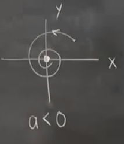
Tüm bunlar bize bir orijinde stabil sarmal verir. Eğer $a=0$ olsaydı, $\dot{r}=0$ olurdu, yarıçapta hiç değişim olmazdı, başladığımız yarıçapta kalırdık,
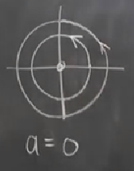
Nereden başlarsak başlayalım bu durum ortaya çıkar.
Demek ki $a=0$ için lineerizasyon doğru sonucu buldu, tabii bu çok şaşırtıcı olmamalı çünkü $a=0$ olduğu zaman küpsel terimler yokoluyor, ve sistem bu noktada zaten lineer oluyor. Lineerizasyon lineer bir sistem üzerinde işliyor doğal olarak. Neyse, $a>0$ için gayrı stabil bir sarmal var,
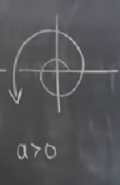
Lineerizasyonun bunların hiçbirinden haberi yok. Elindeki bilgi ile en iyisini yapmaya uğraşıyor, fakat stabil ve gayrı stabil sarmalın mevcudiyetini tahmin etmesi mümkün değil.
Gördüklerimizde kabaca bir sonuç çıkartmak gerekirse merkezlerin analizi ikircikli, hassas. Gayrı lineer terimler, çok ufak gayrı lineer terimler sonuçta büyük değişime yol açabiliyor.
Niye? Merkez durumunda ortaya çıkan kapalı, neredeyse tam çembersel bir yörünge hayal edelim, ama bu yörünge en üste kapanamıyor, çok ufak bir farkla daha aşağıdan gidiyor, ve gidiş yollarının kesişememesi prensibi üzerinden artık dış büyük yuvarlağın içinde hapis kalındı, bu gidişatın kaderi çürüyen sarmal olmaktan başka bir şey olamaz.
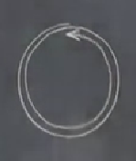
Kıssadan hisse: merkezler hassas. O zaman lineerizasyon bize bir merkez verdiği zaman kafamızda alarm zilleri çalmalı, eğer daha fazla kanıt yoksa elimizde gerçekten bir merkez olduğuna inanmamamız gerekir.
Alarm vs. derken tabii bu durumu çok ta abartmaya gerek yok, dediğimiz gibi uç nokta durumlar bunlar, çoğunlukla ortaya çıkmıyorlar. Birazdan işleyeceğimiz örnek daha çok karşımıza çıkan türden.
Tavşanlar vs. Koyunlar (Rabbits vs Sheep, Kitap Bölüm 6.4)
Bu örnek Lota-Volterra yarış modelini kullanan bir örnek. Yarış derken avcı / avlanan türünden bir yarıştan bahsetmiyorum, koyun tavşanı "yemiyor", hem tavşan, hem de koyun ot yiyorlar. Yarış her iki organizmanın aynı şey yemesi üzerinden ortaya çıkan bir yarış, tüketilen ortak bir kaynak var. $x$ ve $y$ sırasıyla tavşan ve koyun nüfusu. Diferansiyel denklem kullanabilmek için bu değişkenleri sürekli ortamda düşüneceğiz, gerçek dünyada bunlar tam sayı muhakkak, çünkü yarım koyun, çeyrek tavşan olamaz.
$$ \dot{x} = x(3-x-2y) \qquad (5) $$
$$ \dot{y} = y(2-x-y) $$
Bu denklemler biraz uyduruldu, sadece aşağı yukarı gerçek durumu gösteriyorlar. Fizikteki $F=ma$ gibi değiller, öyle derin prensiplerden türetilmiş değiller, olabilecek (plausible) bir model sadece. Bu olabilirliği ispatlamak için birkaç zihin egzersizi yapalım. Eğer hiç koyun olmasaydı,
$$ \dot{x} = x(3-x) ...$$
olurdu (noktadan sonrası birazdan geliyor). Bu denklemi hemen tanımamız lazım, o tek organizmanın nüfusunu modelleyen lojistik denklemi. Nüfus taşıma kapasitesi $K$'ye (burada 3) kadar büyüyor. 3 derken 3 tane tavşan değil, 3000 belki, birimleri şimdilik fazla dikkate almayalım. Devam edelim,
$$ \dot{x} = x(3-x) - 2xy$$
Ek terim koyunların varlığını yansıtıyor, $-2xy$ eksi işaretli, ve bir anlamda koyunların varlığı sebebiyle tavşanların ölüm oranı. Ama demiştik ki koyunlar tavşanları yemiyor, bu doğru, fakat koyunlar tavşanların yemeğini yiyor. Koyunlara tekrar bakalım, biraz tekrar düzenleme ile,
$$ \dot{y} = y(2-x) - xy $$
Burada koyunların taşıma kapasitesi 2 olarak gözüküyor, tavşanların taşıma kapasitesi daha yüksek, demek ki daha iyi ürüyorlar [hoca burada şakayla karışık "tavşan gibi üremek" sözüne de bir atıf yapıyor]. Üreme oranını parantezi açınca görüyoruz, tavşan için $3x$, koyun için $2y$. Yani formülü tavşanın daha hızlı ürediği şeklinde de okuyabiliriz.
Tabii koyunların da bazı avantajları var. Tavşanlar hızlı ürüyor olabilir, ama koyunlar da büyük, okkalı hayvanlar. Tavşan formülünde $xy$ teriminin -2 ile çarpıldığına dikkat, bu rakam koyun formülünde -1, yani birbirleri ile olan etkileşime oranlı ölümler tavşanlar için dezavantaj. Birbirlerini yiyorlar demiyoruz, daha önce belirttik, ama, ne bileyim, belki aynı otu yerken koyun oraya geliyor, tavşanlar kaçıyor vs., bu yüzden daha az ot yemiş oluyorlar. Bu bana kimyadan bir örneği hatırlattı, Kütle Aksiyon Kuralı (The Law of Mass Action) var mesela, iki maddeli ortam düşünelim kimyasal reaksiyon oranı A maddesinin konsantrasyonu çarpı B maddesinin konstrasyonuna eşit, çünkü o çarpıma oranla maddenin molekülleri birbiri ile çarpışıyor.
Üstteki model ekoloji dersinde ilk öğretilen modellerden biri, en basit yarış modeli bu.
Analiz edelim, sabit noktalar nerede? Faktorize edilmiş ana model (5)'e bakmak en iyisi, her iki eşitliğin sağ tarafı ne zaman sıfır olur? 4 farklı şekilde, $x,y$ sıfır olabilir, $x$ ve ikinci formülün ikinci büyük terimi sıfır olabilir, vs.. Tüm bu seçenekleri teker teker irdeleyince şu sabit noktalar ortaya çıkacak, (0,0), (3,0), (0,2), (1,1). Bu noktalar etrafinda lineerize edelim, Jacobian,
$$ A = \left[\begin{array}{rr} \frac{\partial \dot{x}}{\partial x} & \frac{\partial \dot{x}}{\partial y} \\ \frac{\partial \dot{y}}{\partial x} & \frac{\partial \dot{y}}{\partial y} \end{array}\right] $$
$$ = \left[\begin{array}{rr} 3-2x-2y & -2x \\ y & 2-x-2y \end{array}\right] $$
(0,0) noktasında Jacobian, $A = \left[\begin{array}{rr} 3 & 0 \\ 0 & 2\end{array}\right]$.
Bu analizi en kolay sonuçlardan biri, $\tau,\Delta$ ile attığımız taklalara gerek yok çünkü köşegen bir matrisin özdeğerlerini hemen bulmak mümkün, direk köşegen üzerindeki değerler, $\lambda_1=3,\lambda_2=2$. Her iki değer pozitif olduğu için bu bir gayrı stabil düğüm işareti. Gayrı stabil düğümler uç nokta durumlardan değil, o yüzden bu sonuca güveniyoruz, orijinde hakikaten gayrı stabil düğüm var.
Lineer sistemleri işlerken bir gidiş yolunun bir düğümden çıkarken hızlı yolu mu yavaş yolu mu takip ettiğini analiz etmiştik, gidiş yolları $\lambda_2 = 2$ yönünde çıkış yapıyorlar, bu böyle çünkü $|\lambda_2|$ sıfıra $|\lambda_1|$'den daha yakın. Şimdi $\lambda_2$'ya tekabül eden özyön nedir onu bulalım, bu sadece özvektör $v_2 = \left[\begin{array}{cc} 0 & 1 \end{array}\right]^T$.
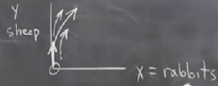
Faz portresini ortaya çıkartmak için takip edeceğimiz strateji şöyle; her sabit nokta etrafında ufak gidiş yolları çizeceğiz, ve sonra tüm bu gidiş yollarını bir şekilde birleştirerek tüm gidiş yollarını taslaksal şekilde ortaya çıkarmaya uğraşacağız. Devam edelim,
(0,2) noktasında Jacobian, $A = \left[\begin{array}{rr} -1 & 0 \\ -2 & -2\end{array}\right]$.
Bu üçgensel bir matris, bu durumda da özdeğerleri hemen okuyabiliriz, yine köşegendeki değerler, $\lambda = -1,-2$. Demek ki stabil düğüm. Gidiş yolları stabil düğüme $\lambda = -1$ özyönünde yaklaşıyor, bu yön $\left[\begin{array}{cc} 1 & -2 \end{array}\right]^T$.
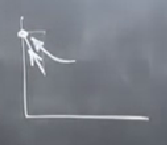
(3,0) noktasında Jacobian, $A = \left[\begin{array}{rr} -3 & -6 \\ 0 & -1\end{array}\right]$.
$\lambda = -3,-1$, yine stabil düğüm.
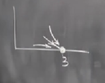
(1,1) noktasında Jacobian, $A = \left[\begin{array}{rr} -1 & -2 \\ -1 & -1\end{array}\right]$.
Bu matris köşegen ya da üçgensel değil, o zaman özdeğer / vektör için biraz daha uğraşmak gerekecek. $\Delta = -1$, determinantta negatif bir değer görür görmez bir eyer düğümü olduğunu biliyoruz, bu düğümler uç nokta durumlarından değil, güvenilebilir. Özvektörleri hesaplayınca gidiş yolunun aşağı yukarı suna benzediğini görebiliriz,
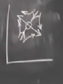
Sabit noktayı gayrı stabil gösterdik, bu doğru.
Şimdi bütün bu yerel resimleri birleştirerek global bir resim ortaya çıkartalım.
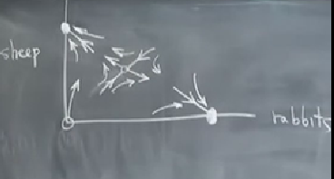
Bazı gözlemler yapalım, bir soru: eğer herhangi bir anda $x=0$ olsaydı, ne olurdu? Bu durumda (5)'e göre yani $\dot{x}=0$, $x$ değişmez. Demek ki herhangi bir anda $y$ ekseni üzerinde isek ($x=0$) o zaman sonsuza kadar orada takılı kalacağız demektir bu. Biyolojik olarak bunun anlamı herhangi bir anda tavşan yoksa ondan sonra da hiç tavşan yok. Eh bu kadar anlamsız değil herhalde, tavşanlar gökten zembille düşmüyorlar, diğer tavşanlardan ürüyorlar. Bu oluşun bir diğer ismi $x$ ekseni değişimsizdir (invariant) [gerçi hoca $y$ ekseni demek istedi herhalde ama anlaşıldı, $x=0$ ile alakalı olan eksen]. $y=0$ için aynı durum var.
Analiz sırasında bu tür değişimsizlikleri, eğer varsa, bulmak faydalı olabilir.
Global resim demiştik, ona devam edelim, bu resmi çizerken eyer düğümü bilgilendirici, ilk onunla başlayalım,
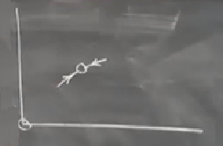
Sonra kendimize soralım, bu oklar nereden geliyorlar? Mantıklı bir açıklama orijinden gelmeleri; diğer sabit noktalardan geliyor olamazlar çünkü gidiş yolları o diğer noktalara yakınken onlara doğru gitmeli. O yolu çizince geri kalanları
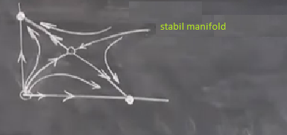
Sonsuzluktan direk ortadaki sabit noktaya giden eğriye eyer düğümünün stabil manifoldu (stable manifold) ismi veriliyor, gerçi bu tek bir eğri, ona niye manifold diyoruz [hakikaten manifold eğimli bir yüzeydir çoğunlukla]? Cevap bu boyuttaki bir eğri ama daha yüksek boyutlarda bir yüzey olurdu, habire terminoloji değiştirmemek için ona baştan manifold deniyor.
Dikkat edersek bu manifold bir tür ayraç niteliğinde, mesela noktalarla gösterilen bölgedeki tüm başlangıç noktalarının hepsinin kaderi aynı.
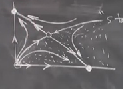
O bölgede başlayan her nokta sağ alttaki sabit noktasına akmak zorunda, bu nokta tavşanların her şeye hakim olduğu nokta. Manifold üstündeki noktalar da aynı kadere sahip, orada tüm akış "koyun cenneti", tüm tavşanlar tükenmiş, sadece koyun kalmış. "Kim kazanıyor?" sorusunun cevabı böylece ilginç bir şekilde cevaplanmış oldu, hem koyunların hem tavşanların bazı avantajları vardı, fakat kimin kazandığı sadece başlangıç noktasıyla alakalı. Manifoldun altından tavşanlar, üstünden koyunlar kazanıyor.
Tabii tam manifold üzerinde olunduğu durum çok ilginç, orada tam ortadaki sabit noktaya bir akış olurdu ve bu nokta bir tür beraber yaşama durumudur, fakat bu gidiş yolunun gayet gayrı stabil bir gidişat olduğunu görmek mümkün, çünkü o yol üzerinde ufak bir sarsım (perturbation), 1 tane daha fazla ya da az tavşan mesela bizi o gidiş yolundan çıkartıp, diğer sabit noktalara doğru gitmemize sebep olacaktı. Biyologlar bu duruma "yarışsal dışarıda bırakmak (competitive exclusion)" ismi veriyorlar, eğer iki organizma aynı yarışsal niş (niche) içinde yaşıyorlarsa stabil olarak beraber yaşamaları mümkün olmuyor. Her iki organizma da ot yiyor, biri diğerinin tükenmesine sebep olacak.
Soru
Manifold'un denklemini bulmak mümkün mü?
Cevap
Güç serileri kullanarak onu yaklaşıksal, ve yerel bir bölgede temsil etmek mümkün, fakat yüksek boyutlarda, tipik örneklerde global denklemi bulmak çoğunlukla imkansızdır.